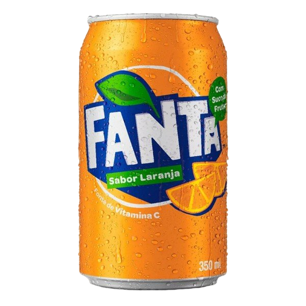

Ganhe Mais Com
Fanta
Prepare-se para uma experiência de sabor única e surpreendente com Fanta, o refrigerante que vai levar você a um mundo de refrescância e diversão. Com suas opções cítricas de laranja, guaraná e uva, cada gole é uma viagem para um paraíso de sabores exóticos e refrescantes. Deleite-se com Fanta e descubra o prazer em cada borbulhar de felicidade. Refresque-se, vibre e deixe-se levar pelo sabor vibrante de Fanta!
Ver Todos Produtos
